Pressure Loss L4 Volumes
Created Thursday 08 October 2015
This chapter explains the purpose and implementation of the adjustable pressure losses at in- and outlets of discretisable L4 volumes.
1. Purpose of Concept
<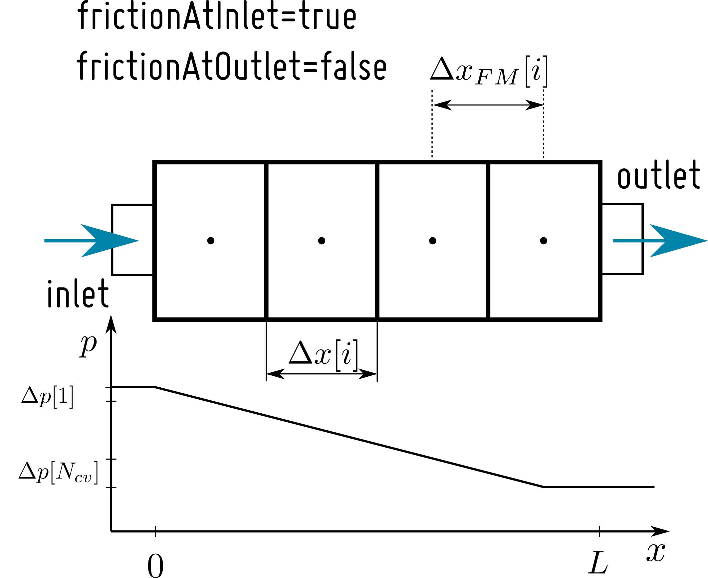
Combining L4 Volumes with a pressure loss with other components of the ClaRa library can sometimes cause numerical problems or even generate not reducible systems of DAEs. Often, the index reduction can not be performed if two models with two pressure states at the connection follow directly one after the other. However, sometimes (assuming index reduction can be performed) it is numerically favourable to have two pressure states directly one after the other (e.g. to suppress chattering at low mass flow rates). Therefore, the pressure loss in the L4 Volume models can be arbitrarily distributed at the in- and outlet (i.e. the connections) of the model. Thus, the position of the states can be manipulated and the above mentioned problems can be avoided.
The pressure loss in the first flow model cell can be switched on with the flag "frictionAtInlet". The pressure loss in the last flow model cell can be switched on with the flag "frictionAtOutlet". With these two flags, the pressure loss L4 models have to differ between four cases:
(1) no pressure loss at inlet, no pressure loss at outlet
(2) no pressure loss at inlet, pressure loss at outlet
(3) pressure loss at inlet, no pressure loss at outlet
(4) pressure loss at inlet, pressure loss at outlet
As a consequence, the pressure loss models have to differ between the four cases and distribute the pressure loss of the total pipe, accordingly.
2. Example

Equation (1) gives a simple linear pressure loss correlation. The definite quantity for the pressure loss in this model is the nominal pressure loss  , which has to be distributed over a discretised component.
, which has to be distributed over a discretised component.
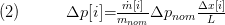
Equation (2) distributes the pressure loss over the discretised component according to the array 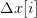. Applying a differentiation of the four cases on equation (2) and keeping in mind, that the discrete flow model elements with a pressure loss change with the cases, we get:
no pressure loss at inlet, no pressure loss at outlet
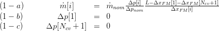
The loop is run from  to
to  .
.
no pressure loss at inlet, pressure loss at outlet
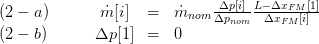
The loop is run from  to 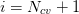.
to 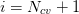.
pressure loss at inlet, no pressure loss at outlet
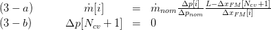
The loop is run from 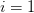 to 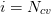.
pressure loss at inlet, pressure loss at outlet
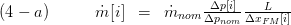
The loop is run from  to
to  .
.
3. Nomenclature
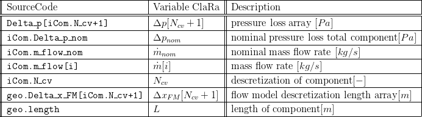
Backlinks: ClaRa:Basic Concepts of Modelling:Finite Volume Approach ClaRa:Basics:ControlVolumes:FluidVolumes:VolumeVLE L4 Advanced ClaRa:Basics:ControlVolumes:Fundamentals:PressureLoss:Generic PL:LinearPressureLoss L4 ClaRa:Basics:ControlVolumes:Fundamentals:PressureLoss:Generic PL:QuadraticNominalPoint L4 ClaRa:Basics:ControlVolumes:Fundamentals:PressureLoss:VLE PL:QuadraticNominalPoint L4